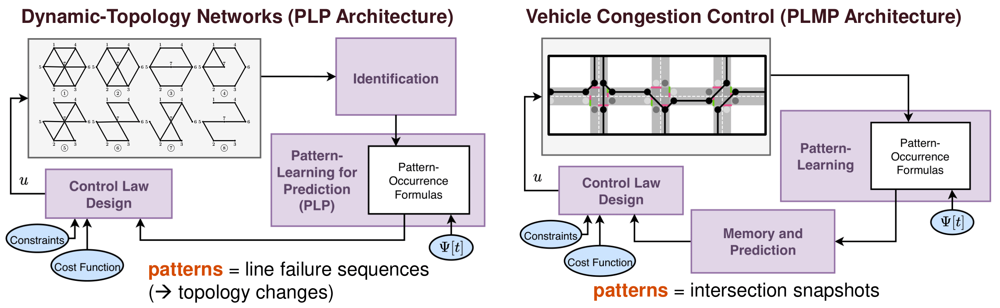

(2023/8/28) My research lab at KAIST is now live. Check it out: [Link]
My PhD Defense [Jan 2023]
The overall goal of my research lies primarily in making stochastic control more efficient. A large part of achieving this goal requires us to understand the tradeoff between model-free (data-driven) and model-based methods.
On one hand, it is feasible to rely entirely on model-free control methods for controlling complex stochastic systems, but a well-known issue with these methods is their intensive data consumption and training time.
On the other hand, model-based control methods require little to almost no data or training, but can only be designed for simpler classes of stochastic systems, i.e., those whose behavior can be written as explicit equations.
Below are sections highlighting some of the projects we are working on towards this overall goal. Click on each section header to expand the details.
Motivation: For many network control problems, there exist natural spatial structures and temporal repetition.
These patterns can be exploited to prevent controller synthesis methods from spending unnecessary time and energy redundantly computing control laws for repeated scenarios.
One example is in controlling congestion of vehicle traffic flow over metropolitan intersection networks. Spatial symmetries arise from the rectangular, grid-like structure of the network, while temporal symmetries arise from both the structure and from human routines, e.g., commute times.

Description: We present a modular framework for controlling such systems that is based on learning and taking advantage of these patterns.
More specifically, we identify recurrent patterns in the underlying stochastic process, then leverage two key functions: 1) memorize past patterns to prevent redundant computation of control policies, 2) predict the expected occurrence times of future patterns to schedule control policies in advance.
Representative work(s):
SooJean Han, Soon-Jo Chung, John C. Doyle, "Predictive Control of Linear Discrete-Time Markovian Jump Systems by Learning Recurrent Patterns." Automatica, 2023.
Motivation: In the modern day, both vehicles and light signals are becoming increasingly automated and so we require a framework that will model them as individual agents with the ability to make their own decisions. Moreover, as mentioned in the previous section, metropolitan intersection networks have a lot of spatial and temporal patterns that can be exploited for more efficient control. At present, the state-of-the-art methods to achieve both qualities involve reinforcement learning with a component of memory, i.e., experience replay, episodic control, etc.
Description: We study and extend the memory component of reinforcement learning methods, and incorporate them within the pattern-learning framework described in the previous section. This includes using an extension of episodic control that builds equivalence classes to group together patterns which are considered "similar" to each other, hereby saving memory consumption.
Although the specific application of focus so far has been on traffic congestion control, our goal is to develop this framework to be able to be used in other similar network control applications which can be solved using reinforcement learning methods.
Representative work(s):
SooJean Han, Soon-Jo Chung, Johanna Gustafson, "Congestion Control of Vehicle Traffic Networks by Learning Structural and Temporal Patterns." L4DC, 2023